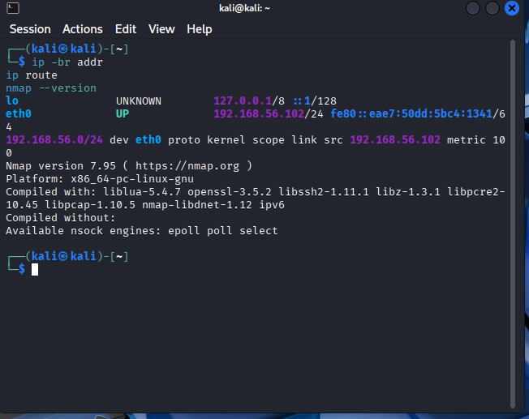
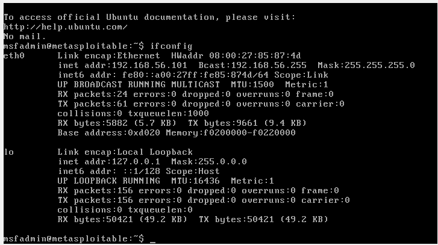
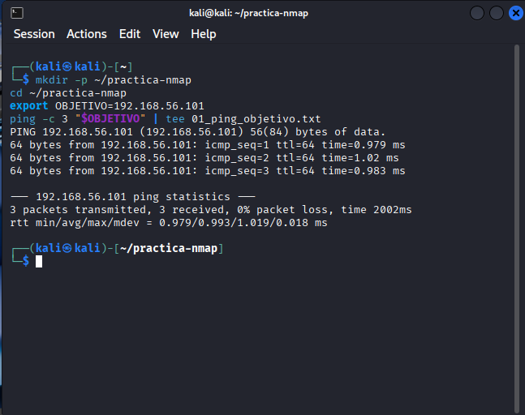
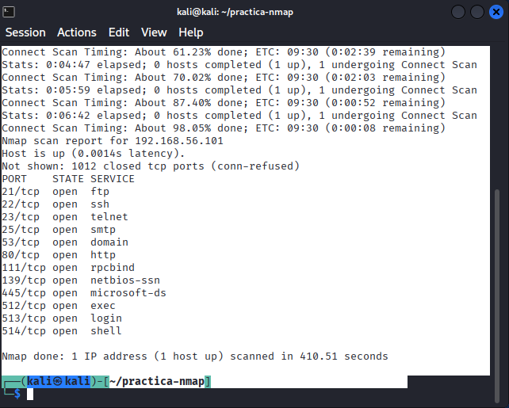
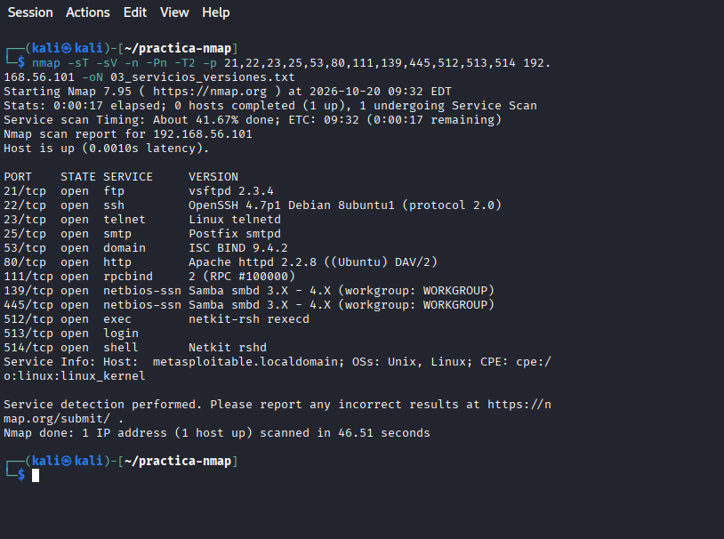
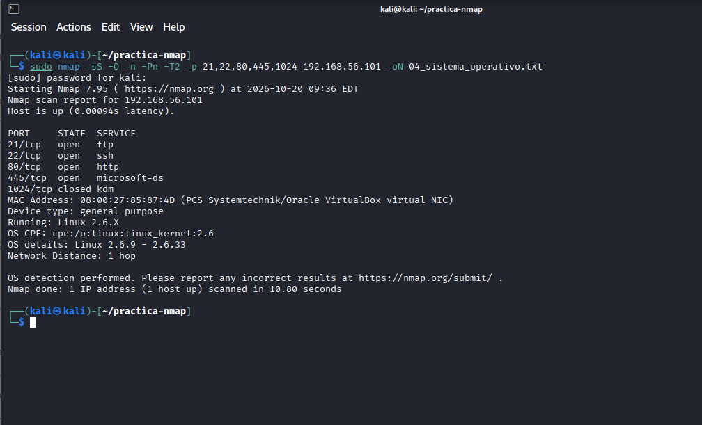
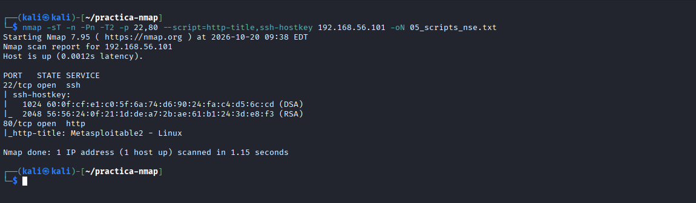
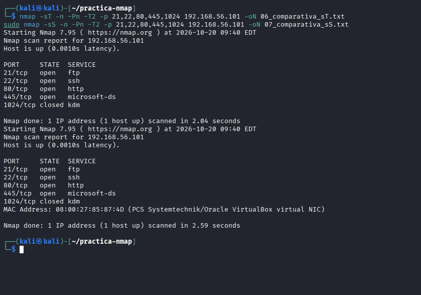

Red y alcance de la práctica
Se parte de Kali Linux y Metasploitable instaladas en VirtualBox. Se configura en ambas una red de tipo solo-anfitrión, seleccionando el mismo adaptador y marcando “Cable conectado”. Esta red comunica las máquinas virtuales y el anfitrión sin proporcionar salida directa a Internet a través de ese adaptador.
En la preparación apareció un error de controlador de red solo-anfitrión. Se instaló el controlador incluido en VirtualBox y se recuperó la posibilidad de crear estos adaptadores. Aunque se preparó también una red 192.168.96.0/24, las comprobaciones de la ejecución muestran que la práctica se realizó en 192.168.56.0/24. Los comandos y resultados de este documento utilizan esta red real.
Kali: 192.168.56.102/24. Metasploitable: 192.168.56.101/24. Todos los escaneos se dirigen exclusivamente a esta víctima. El PDF utiliza otra IP como ejemplo, que se adapta al laboratorio.
Dirección IP y versión de Nmap en Kali
ip -br addr
ip route
nmap --versionKali utiliza eth0 con la dirección 192.168.56.102/24 y una ruta directa a 192.168.56.0/24. No aparece una ruta predeterminada, coherente con el laboratorio aislado. Nmap 7.95 está instalado. La ausencia de gateway no impide la comunicación con la víctima en esta misma subred.

Dirección IP de Metasploitable
ifconfigMetasploitable tiene la dirección 192.168.56.101, máscara 255.255.255.0 y MAC 08:00:27:85:87:4D. Kali y la víctima pertenecen a la misma subred. Esta consulta de configuración se realiza en la consola de la víctima; los escaneos se ejecutan desde Kali.

Preparación de evidencias y conectividad
mkdir -p ~/practica-nmap
cd ~/practica-nmap
export OBJETIVO=192.168.56.101
ping -c 3 "$OBJETIVO" | tee 01_ping_objetivo.txtSe prepara la carpeta de trabajo y se envían tres solicitudes ICMP al objetivo. La captura y 01_ping_objetivo.txt recogen el resultado de esta comprobación. No se transcriben cifras de pérdida o latencia de ping porque su salida no se aportó durante la elaboración. Los escaneos posteriores sí confirman que el objetivo responde.

Exploración TCP de los puertos 1–1024
nmap -sT -Pn -T2 -p 1-1024 192.168.56.101 -oN 02_puertos_tcp.txtDuración aproximada: 7 minutos. Se detectaron 12 puertos TCP abiertos y 1012 cerrados por rechazo de conexión. El análisis se limita a 1–1024: no es un inventario de todos los puertos ni incluye UDP. -sT establece conexiones TCP completas; -Pn omite el descubrimiento previo, -T2 emplea un ritmo conservador y -oN guarda la salida. Apareció un aviso por falta de configuración DNS, pero no impidió escanear la IP; en los siguientes comandos se usó -n para omitir la resolución de nombres.

Detección de servicios y versiones
nmap -sT -sV -n -Pn -T2 -p 21,22,23,25,53,80,111,139,445,512,513,514 192.168.56.101 -oN 03_servicios_versiones.txtDuración aproximada: 1 minuto. -sV analiza los 12 puertos abiertos ya localizados. Se identificaron vsftpd 2.3.4, OpenSSH 4.7p1 Debian 8ubuntu1, ISC BIND 9.4.2 y Apache 2.2.8, entre otros. Se obtuvo el nombre metasploitable.localdomain. En Samba se informó un rango 3.X–4.X, no una versión exacta; el puerto 513 no aportó una versión. Una identificación de versión no demuestra por sí sola que exista una vulnerabilidad explotable.

Fingerprinting del sistema operativo
sudo nmap -sS -O -n -Pn -T2 -p 21,22,80,445,1024 192.168.56.101 -oN 04_sistema_operativo.txtDuración aproximada: 11 segundos. Se incluyeron cuatro puertos abiertos y uno cerrado para facilitar la identificación. Nmap estimó Linux 2.6.X, concretamente Linux 2.6.9–2.6.33; no confirmó una versión exacta. También mostró una tarjeta virtual de Oracle VirtualBox, la MAC 08:00:27:85:87:4D y una distancia de un salto. El adaptador virtual identifica el entorno de red, no el kernel. La estimación concuerda con los indicios Unix/Linux de -sV, pero requeriría comprobación local para confirmarse.

Investigación con dos scripts NSE
nmap -sT -n -Pn -T2 -p 22,80 --script=http-title,ssh-hostkey 192.168.56.101 -oN 05_scripts_nse.txtDuración aproximada: 1 segundo. http-title obtuvo el título “Metasploitable2 - Linux”, que aporta contexto sobre el sitio servido en el puerto 80, sin confirmar por sí solo el sistema operativo. ssh-hostkey obtuvo las huellas de las claves públicas DSA de 1024 bits y RSA de 2048 bits. Estas permiten identificar y contrastar el servidor SSH; no son contraseñas ni claves privadas. Ambos scripts se aplicaron a servicios previamente observados.

Comparación de TCP Connect y TCP SYN
nmap -sT -n -Pn -T2 -p 21,22,80,445,1024 192.168.56.101 -oN 06_comparativa_sT.txt
sudo nmap -sS -n -Pn -T2 -p 21,22,80,445,1024 192.168.56.101 -oN 07_comparativa_sS.txtDuración aproximada: 2 segundos para TCP Connect y 3 segundos para SYN. Los dos métodos coincidieron: 21, 22, 80 y 445 abiertos; 1024 cerrado. SYN añadió la MAC de la víctima. -sT completa la conexión TCP mediante el sistema operativo; -sS requiere privilegios y no completa el establecimiento normal de conexión. SYN sigue siendo detectable. Una sola medición no permite afirmar qué método es más rápido en general. No se consultaron los logs de la víctima, por lo que no se afirman diferencias observadas en sus registros.

Puertos y servicios observados
Estado obtenido en la exploración TCP y versiones informadas por -sV. El inventario se limita a los puertos 1–1024.
| Puerto | Estado | Servicio | Identificación |
|---|---|---|---|
| 21/tcp | Abierto | ftp | vsftpd 2.3.4 |
| 22/tcp | Abierto | ssh | OpenSSH 4.7p1 Debian 8ubuntu1 |
| 23/tcp | Abierto | telnet | Linux telnetd |
| 25/tcp | Abierto | smtp | Postfix smtpd |
| 53/tcp | Abierto | domain | ISC BIND 9.4.2 |
| 80/tcp | Abierto | http | Apache httpd 2.2.8 ((Ubuntu) DAV/2) |
| 111/tcp | Abierto | rpcbind | Versión de protocolo 2 (RPC #100000) |
| 139/tcp | Abierto | netbios-ssn | Samba smbd 3.X–4.X · WORKGROUP |
| 445/tcp | Abierto | netbios-ssn | Samba smbd 3.X–4.X · WORKGROUP |
| 512/tcp | Abierto | exec | netkit-rsh rexecd |
| 513/tcp | Abierto | login | Sin versión identificada |
| 514/tcp | Abierto | shell | Netkit rshd |
Información aportada por NSE
http-title: Metasploitable2 - Linux
ssh-hostkey:
DSA 1024: 60:0f:cf:e1:c0:5f:6a:74:d6:90:24:fa:c4:d5:6c:cd
RSA 2048: 56:56:24:0f:21:1d:de:a7:2b:ae:61:b1:24:3d:e8:f3Observaciones, limitaciones y recomendaciones
Cinco observaciones
- Se identificaron 12 puertos TCP abiertos de los 1024 examinados, con servicios de acceso remoto, correo, web, DNS y compartición de archivos.
- Telnet y los servicios exec/login/shell amplían la superficie de acceso remoto. Conviene revisar su necesidad y sustituir los accesos heredados por alternativas seguras.
- La identificación mostró versiones antiguas de vsftpd, OpenSSH, BIND y Apache. Son indicios que requieren revisión de soporte y parches; no se verificaron vulnerabilidades mediante explotación.
- La estimación de Linux 2.6.9–2.6.33 y la información Unix/Linux de servicios son coherentes entre sí. La versión exacta del sistema no quedó confirmada.
- Los dos scripts aportaron información adicional: el título de la aplicación web y las huellas públicas del servidor SSH. Connect y SYN coincidieron en el estado de los cinco puertos comparados.
Dos limitaciones encontradas
- Resolución DNS no disponible: el primer escaneo avisó de que no podía abrir /etc/resolv.conf ni determinar servidores DNS. Se continuó por IP y se utilizó -n en los siguientes comandos. No se pudo basar el inventario en una resolución inversa normal; el hostname informado por -sV es información obtenida del servicio.
- Identificación no concluyente: Nmap devolvió un intervalo de kernels Linux y un rango amplio para Samba, sin versión para algunos servicios. Las huellas y banners remotos no sustituyen la verificación local ni permiten confirmar CVE por sí solos.
Además, no se examinaron UDP, los puertos TCP superiores a 1024 ni los registros del objetivo. La práctica describe el alcance probado, sin concluir que el resto de servicios no exista.
Tres medidas de mitigación
- Reducir servicios expuestos: desactivar Telnet y los servicios rexec/rlogin/rsh si no son necesarios, y mantener únicamente los servicios justificados. Priorizar esta medida por los puertos 23, 512, 513 y 514 observados.
- Actualizar la plataforma y sus servicios: revisar y migrar el kernel y los paquetes identificados a versiones con soporte, validar la configuración SSH y retirar algoritmos heredados como DSA según la compatibilidad necesaria.
- Restringir acceso con firewall y segmentación: permitir SSH solo desde los equipos de administración y limitar SMB/RPC, DNS y otros servicios a los orígenes que realmente los necesitan.
Conclusión
Nmap permitió identificar la exposición de la víctima, ampliar el inventario con versiones, estimar el sistema operativo y obtener datos mediante dos scripts NSE. Ambos tipos de escaneo comparados coincidieron en los estados. La combinación de puertos y software observado justifica reducir la superficie expuesta, revisar actualizaciones y controlar el acceso. Los resultados son reconocimiento de servicios, no una demostración de explotación.
Archivos de evidencia
01_ping_objetivo.txt
02_puertos_tcp.txt
03_servicios_versiones.txt
04_sistema_operativo.txt
05_scripts_nse.txt
06_comparativa_sT.txt
07_comparativa_sS.txtLas salidas se guardan en ~/practica-nmap. Los comandos y resultados de los escaneos se han documentado a partir de las transcripciones aportadas. La captura de ping y su TXT permiten revisar esa prueba sin atribuirle estadísticas no facilitadas.
Descargar informes originales
Salidas de la comprobación de conectividad y de los escaneos realizados desde Kali. Estos archivos complementan las capturas de la práctica.
Referencias
Enunciado: PRACTICANMAP.pdf, apartados 4 y 5.